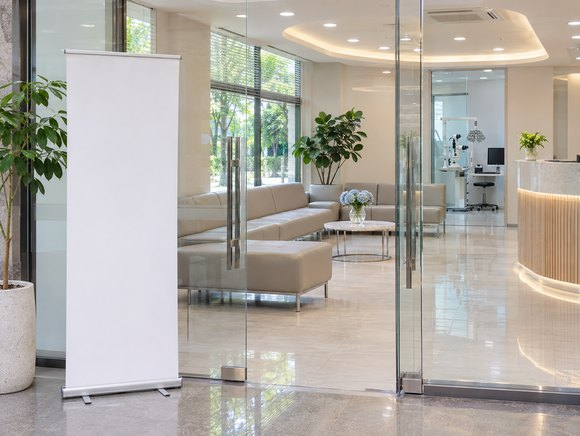
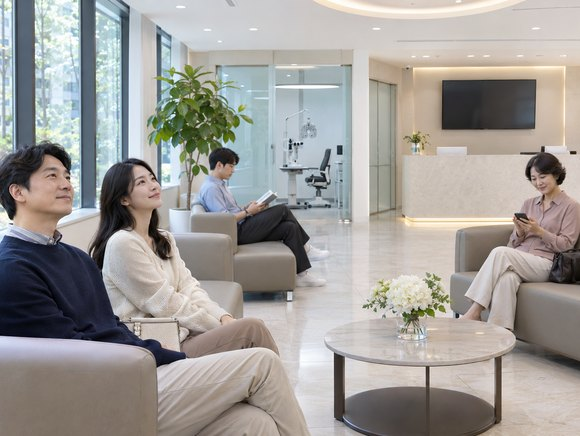
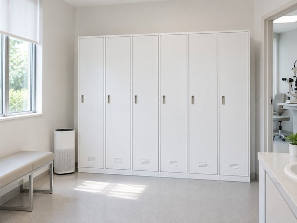
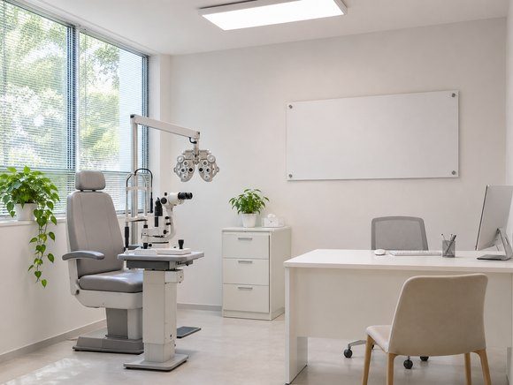
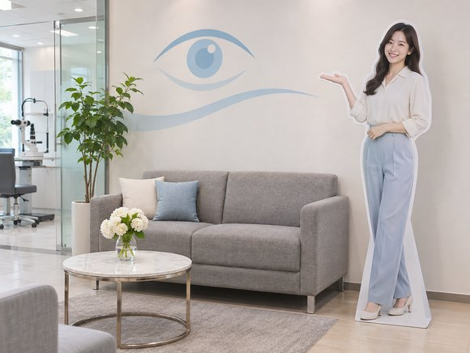

실크스마일라식 내돈내산 후기
- 담**
- 수술일 2026.01.03
리뷰 내용
- 교정전
- 교정후
환절기만 되면 바람 때문에 눈이 더 뻑뻑했어요.
새해를 맞아 마음을 먹고 스마일 수술을 받았어요.
눈 수술을 받을지, 어느 곳에 상담을 갈지 고민하던 제 경험을 적어 봅니다. 알아보시는 분들께 과정이 참고되면 좋겠어요.

│제가 수술을 결심한 이유
지난해부터 눈 불편함이 반복되어
컬러렌즈를 끼다 보니 일회용을 쓰는데도
눈이 쉽게 피로해지더라고요.
아침 일찍 렌즈를 껴야 하는 날엔 준비부터 번거롭게 느껴졌어요.
그날 하루 컨디션 망가지는 건 일도 아니었어요ㅠ
주변에 라식하고 편해졌다는 친구들이 있어서 저도 관심이 생겼어요.
주변 사람들의 경험을 듣고 저도 수술을 생각하게 됐어요.

친구가 몇 년 전에 이곳에서 수술했다는 이야기를 들었어요.
가족도 이곳에서 수술을 받아서 저도 선택하게 됐어요.
비용 조건은 상담 때 확인했어요.
저는 오후 늦게 검사를 예약했고
사전 검사는 체감상 일고여덟 가지쯤 한 것 같고
검사는 제 체감으로 오래 걸리지는 않았어요.
측정해 보니 근시는 보통 수준이었는데 난시 수치가 더 높게 나왔어요.
눈 상태는 좋지 않았지만 각막 두께는 평균보다 두껍다고 했어요.
검사 뒤 제게 맞는 방법을 상담받았어요.
제가 알기로는 스마일 수술이 좀 더 최근에 나온 방법이라
회복 기간에 관한 이야기를 듣고 스마일 수술 상담을 받아 보기로 했어요.
│수술 방식을 고른 과정
상담에서 사용 장비와 방식이 여러 가지라고 들었고
한 제품은 출시된 지 오래됐고 가격대도 달랐어요.
또 하나는 나온 지 얼마 안 된 300만 원대
실크 스마일이었어요. 뒤엣것이 난시를 더 잘 잡아 주고
회복과 관련된 점과 추가 처치 가능성도 함께 설명 들었어요.
필요한 점안제와 관리 방법도 안내받았어요.
검사 뒤 눈 상태가 괜찮으면 당일 수술도 된다고 해서,
마음먹은 뒤 가능한 날짜를 확인해 수술 일정을 잡았어요.
친구가 수술한 곳이라 처음부터 상담 후보에 넣어 두었어요.
간호사와 검안사 선생님들이 모두 친절하게 대해 주셨어요.
설명을 듣고 제 선택으로 진행하기로 했어요.
병원도 크고 깔끔해서 체계적으로 보였고요.
소지품 보관 공간이 가까이에 있어 편했어요.

특정 의료진을 정하고 간 건 아니었어요. 친구가 먼저 다녀온 이야기는 들었고요.
상담 후 수술은 담당 의료진에게 맡기기로 마음먹었어요.
의료진 일정에 맞춰 잠시 기다린 뒤
시력 검사를 다시 받고 동의서도 작성했어요.
주의할 점을 안내받은 뒤 혈청 안약을 준비하려고 채혈도 마쳤어요.
약국에 들러 필요한 안약까지 받아 왔어요.

그래서 6시 반쯤 수술하러 들어간 것 같아요.
수술 과정은 제게 짧게 느껴졌어요.
제가 겁이 많은 편이라 수술 전에 무척 긴장했어요.
수술 중에는 숨을 편하게 쉬기 어려운 순간도 있었어요.
그것만 빼면 빛만 잘 보고 있으면 돼요.
진행 중에는 필요한 안내를 받으며
미리 눈 검사를 받으면서 자극에 조금 익숙해졌어요.
걱정했던 것보다 차분히 마칠 수 있었어요.
아 참, 눈동자가 제 마음대로 안 움직이는 느낌도 있어요.
검사 장비를 볼 때 어느 방향을 바라봐야 하는지 헷갈렸어요.
시선을 둘 곳을 알려주셔서 그쪽을 바라봤어요.
수술 직후에는 바로 선명하게 보이진 않았어요.
비유하자면 안경에 서린 김이 걷히듯
시간이 지나며 흐릿함이 조금씩 달라졌어요.
처음에는 휴대전화 글씨를 읽기 어려웠고
보이긴 하는데 흐린 막이 씌워진 것처럼 보이는 느낌?
대충 위치를 짚어 메시지를 보냈어요.
수술 후 다섯 시간쯤 지나자 흐릿함이 조금씩 가셨고
엄청 선명하진 않아도 흐릿하게나마 글자가 보였어요.
다음 날에도 불편함이 조금 남아 있었어요.
보호자 없이 혼자 지하철을 타고 병원에 왔어요.
할 수는 있을 것 같은데 좀 힘들 것 같아요.
눈물이 줄줄 흐르고 눈이 시린 느낌이 들어요.
수술할 때는 렌즈를 오래 낀 날처럼 눈이 묵직하고 불편한 느낌이었어요.
계단은 보였지만 시야가 뿌옇게 느껴져 신경 쓰였어요.
이왕이면 보호자랑 같이 오시길 추천해요.
후드티는 피하라는 말을 듣고 벗고 입기 편한 옷을 챙기면 된다고 안내받아서
수술 뒤엔 바로 못 씻는다고
수술 날 아침에 샤워를 하고편한 복장으로 왔어요

동행해 준 친구에게는
정말 고마웠어요.
옆에서 도와줘서 고마워!
안경 없이 주변을 볼 수 있다는 점이 제게는 크게 느껴졌어요.
실내외를 오갈 때 렌즈에 김이 차지 않아 한결 수월했어요.
검사 중 경험한 감각이 무척 신기해서 감격스러웠어요.
긴장도 했지만 제 선택을 후회하지 않아요. 이건 제 경험으로 남겨둘게요.
출처 : 환자 블로그 후기
- 교정전
- 교정후